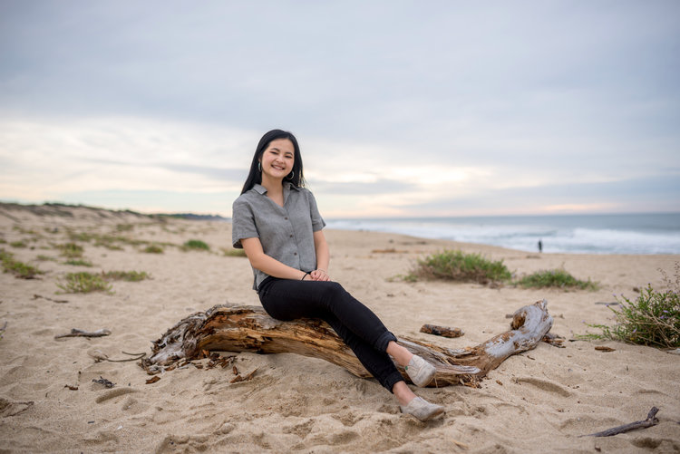
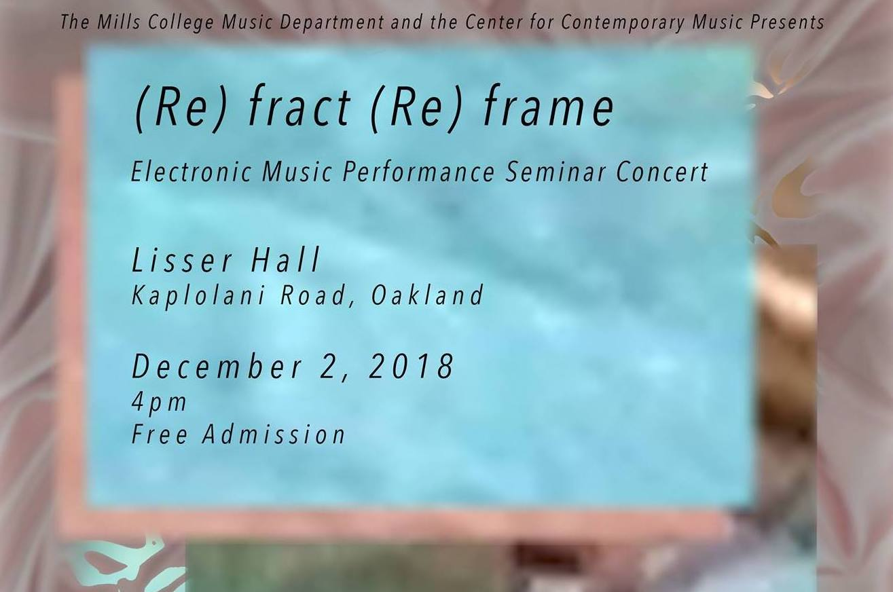
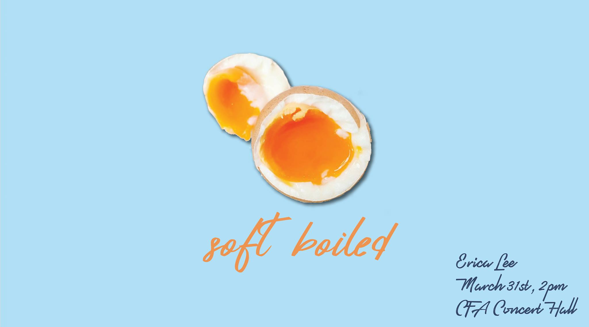
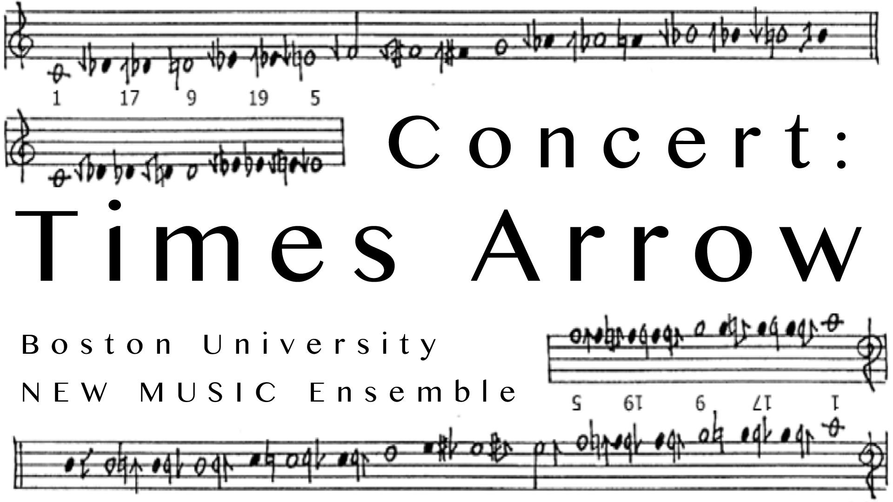

Hi, I'm Erica!
I am currently at Mills College getting a MFA in Electronic Music and Recording Media. I work with acoustic instruments, electronics and video. I am very passionate about creating spaces that allow audiences to be vulnerable and reflect.
Take a peek at my work.

Music
butter your life with music
Webern
String Quartet 2018
Dreams are Humming
Fixed Media Response to Cecil Taylor Life As 2018
Praying Mantis in Atlantis
Boston University Orchestra reading, May 2, 2018
Lore
Collaboration with Matthew Ka Git Wong, Recorded March 31, 2018
With Time (Solo for piano)
Performed by Jeffrey Tsai, Recorded April 12, 2018
Surrounded by Strangers
5.1 Stereo for Recorded subway sounds
Emerald Harbor
Performed by Lauren Casey-Clyde, Recorded March 31, 2018
Emerald Harbor
Lauren Casey-Clyde 2017, Solo Euphonium and Fixed Media
Fireworks
Recorded metal chopstick and spoon, October 31, 2017
The Cafe
Performed by the Times Arrow Ensemble, 2017
Mushy Mermaid Space Boat
Fixed media 2015
Electronic Mushy Mermaid Space Boat
Performed at Boston University Composer Concert, October 23, 2015
Films
feast your ears, eyes, and soul
Cover Up
2017
Indie art video, exquisitely expressing and juxtaposing the societal expectations of masking your true emotions with a facade of happiness, while being burdened by the true pressures of life underneath.
Flower
2016
little animation about growing up in the big bold world.
something about art and color

A Butterfly Dream 2019
Contact
repertoire
/ˈrepə(r)ˌtwär/, noun:
The complete list or supply of dramas, operas, or musical works available for performance.
Morning
2018
- Video, fixed media, mic’ed paper sounds
- You wake up and hear your home is alive. The world outside has never stopped moving and you have some visitors. The lovely sun rays are dancing up and down your walls, but they won’t stay forever. Lay in bed a little longer and enjoy the quiet peace and revel in your Morning thoughts.
First Impressions
2018
- Performer with a stack of blank 11x17 paper
- First Impressions is about the relationship between people passing each other on the street without ever really interacting. Everybody has a presence, and we all make an impression on each other, even if just for a second. The audience member is given a small snapshot into how the performer sees them. The sound represents how the performer views the audience member in a brief gesture. It is a very intimate process of the performer walking down this row of people and showing their impression of them and then, quickly, continuing onto the next.
Reflection
2018 Collaboration with Matthew Ka Git Wong
- Installation
- The installation uses various sounds coming from closed doors within a corridor with a final room that contains a mirror and a set of questions. The hallway creates an atmosphere of evoking memories and feelings, and allowing the participants to feel vulnerable along this path towards the final "reflection" room.
Throughout the hallway are several closed rooms containing set sounds behind the doors. There are six sounds total occurring in the hallway, traveling along the path;
the first sound is a person giving themselves confidence,
the second sound is a depicted couple (or parents) arguing,
the third sound is a motherly like figure humming and cooking (stove sounds, chopping, etc.),
the fourth sound is a collection of baby noises,
the fifth sound is a person aggressively yelling negative thoughts out loud,
and the sixth sound is a loud drone using noise and pitches that represents a confused and overloaded state of mind.
After the hallway of sounds the participant reaches a final destination, where a sign states that the following room can only have one person at a time and the door preceding is to be closed when the participant enters. The participant immediately sees a chair facing a one-way mirror (the other side is a window) and another sign within eye level saying to "sit". Unbeknownst to the participant is a speaker positioned towards the chair and a person, “the interviewer”, stationed to ask questions. The questions do not begin unless the participant sits down and a hidden timer of 4 minutes begins when the participant closes the door.
The interviewer who is behind the one-way mirror asks the participant, “Are you happy?”, and is only allowed to ask questions in a monotone voice (to depict no reactions or judgements). Their goal is to reach a point where the participant questions or feels a strong security towards the things important to them. The interviewer is restricted to only asking questions and can not answer or respond to anything, they can only respond in silence or by repeating the same question. Once the interviewer can go no further in delving deeper, they finish by asking, “What is one sentence you want to be remembered by?”, once the participant answers, no further questions or words are said. The participant is free to decide to stay until the timer goes off or leave beforehand.
- String Quartet
- Graphic Score
- Response to Anton Webern’s Bagatelles for String Quartet I. The lines and dots follow the shape of the original score. Stanza 2 and 3 are switched.
- Fixed media using Protools
- Response to Cecil Taylor's Life As solo Piano piece
- Was inspired by Cecil Taylor humming in the recording, and recorded myself humming along with it.
- Duration: 1:50 minutes
- Orchestra: 2 + Picc. 3. 3. 2 + CBN | 4. 3. 3. 1 | Harp | 3 Per | Strings
- written for an orchestration class and reading April 18, 2018
- Duration: 3.5 minutes
Dead Bird
2018
- Video and Sound Installation
- Dead Bird is really about the cycle of life. There are images of clouds with birds soaring, and images of a dead bird floating in a stagnant pool. It is an interactive installation piece, where the voices of audience members would
be taken as input and spun through MAX MSP to become bird sounds. We become the birds, but since this is a concert setting.
- Collaboration with Matthew Ka Git Wong
- Stereo Piece, 7 minutes
- Matthew Ka Git Wong and I are both Chinese-American from the San Francisco Bay-Area. We wanted to create a piece that embodied and celebrated our heritage. Food is very important in our culture, and we both grew up eating and making Tong
Yuen, a Chinese dessert. We wanted this piece to represent our growing up and continuing the traditions of our ancestors. The fixed media is created by recordings of us making the Tong Yuen. On stage we are characters that
grow up right in front of you. I play the child who learns from my parent (Matthew). When years pass and Matthew gets older, I take over the cooking.
- Solo Piano, 5 minutes
- Three Movements: We Listen, We Die, We Decay
- With Time, things change. The first movement is all about the notes and the rhythm. It’s about pitches and how they are constantly changing and always running. In the second movement, we take a pause and just breath each note in.
Here, the note is allowed to ring and decay into silence. The third movement is all about the soul of the piano. The hum of the strings and the cries that decay over time. I wanted there to be minimal notes and for the audience
to fully listen to the sounds of the piano.
- 5.1 Stereo, 5 minutes
- Musique Concrete: recorded subways noises
- The genesis of this piece was fireworks exploding in the air and slowly falling back down from the sky to explode again as a smaller burst. Finally it slowly fades away into nothingness. This piece was done in stereo to create
the movements of sounds shifting between the left and right speaker. I used time shift and pitch shift to create these subtle changes in timbre. I utilized the flexibility of electronic music to help create the sound effects.
- Commissioned by Lauren Casey-Clyde 2018
- For solo Euphonium and fixed media, 4 minutes
- It was composed to showcase the beautiful sounds of the Euphonium. I wanted the Euphonium to blend with the fixed media.
Good Morning, Good Night
November 27, 2017
- 2 minutes
- Medium Orchestra: 2 + Picc. 2. 2. 2 + CBN | 4. 2. 2. 1 | Harp | Timp + 2 Per | Strings
- Based on super impositions of leaf shapes that created patterns for the orchestra to follow.
-
Musique Concrete: recorded a metal chopstick and a metal spoon, 3 minutes
- Represents a firework exploding in the air and slowly falling back down from the sky to explode again as a smaller burst. Finally fading away into nothingness.
The Cafe
December 12, 2017
-
Graphic score for mixed ensemble, 8 minutes
- The CAFE, was written for Time’s Arrow New Music Ensemble. It is my first composition with graphic notation. It is intended to be theatrical and vague, an allegory to life. We are surrounded by people of all different backgrounds,
providing us an abundance of undiscovered visual and audio richness. In my Cafe, there are three parts; The Cult, An Argument, and An Ever-changing Conversation.
-
Video with score, 10 minutes
- My take on art video. I tried to express and contrast the ideas of putting on a happy face, while feeling the pressures of life bear down on you.
-
Animation with score, 27 seconds
- The motivation for this piece was to learn how to use animation to provide another avenue for my music composition. I wanted to keep the animation simple but still express an message.
What a Strong Egg
December 9, 2016
- Solo Bassoon, 3.5 minutes
- Written in response to the Taylor Wessing Photographic Portrait Prize, 2016
- Perfomred at the National Portrait Gallery in London
- Photo: Zazie by Cecile Birt
- Represent the innocent confidence of a toddler drinking soup
Mushy Mermaid Space Boat
2015
- Chamber Version and Electronic Version, 3.5 minutes
- Three Movements: Mushy Sleep, Mermaid Swimming, Space Boat
- Chamber Version perfomred at Boston University Composer Concert, October 23, 2015
lights, camera, action
Upcoming Performances
check back for updates!
Past Performances

(Re) fract (Re) frame: Electronic Performance Seminar Final Concert
December 2, 2018 @ 4pm
Lisser Hall Mills College December 2, 2018 4pm.

Soft Boiled: A Concert by Erica Lee
March 31, 2018
CFA Concert Hall Boston University

Time's Arrow New Music Ensemble Concert
December 12, 2017
The CAFE